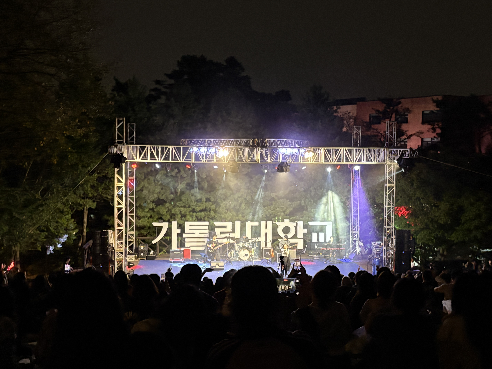

낮의 스머프동산
낮의 스머프동산

밤의 다맛제 스머프동산이 장소가 의미 있는 이유
봄, 가을 맑은 날씨에 늘 동기들과의 추억이 여기서 쌓였기 때문입니다.
찾아가는 방법
정문에서 하염없이 걸어가다 보면 나오는 초록 언덕과 가톨릭대학교 표지판
여기에서 해볼 것
- 날씨 좋은 중간고사 시험 기간에 야외 공부하기
- 10월 축제인 '다맛제'를 신나게 즐기기
날씨 좋은 날 동기들과 배달음식으로 피크닉하기 좋은 장소
낮의 스머프동산

밤의 다맛제 스머프동산봄, 가을 맑은 날씨에 늘 동기들과의 추억이 여기서 쌓였기 때문입니다.
정문에서 하염없이 걸어가다 보면 나오는 초록 언덕과 가톨릭대학교 표지판